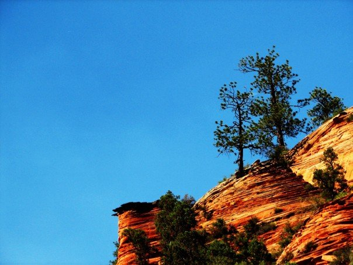
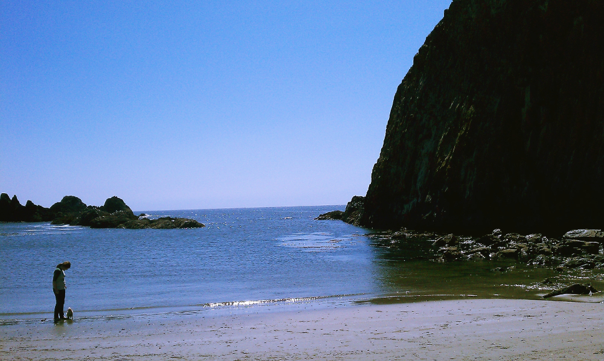
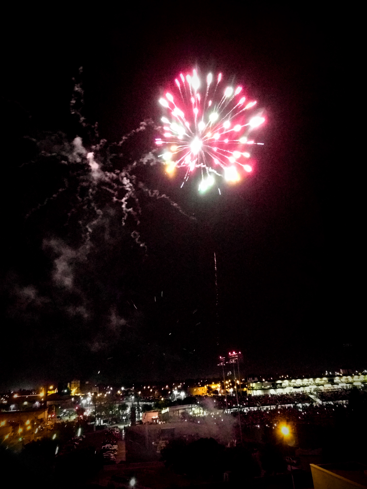

Further samples of my work

Indian Pools in the Sierra Nevadas, near China Peak. A short but delightful hike when the water is calm.



Indian Pools in the Sierra Nevadas, near China Peak. A short but delightful hike when the water is calm.